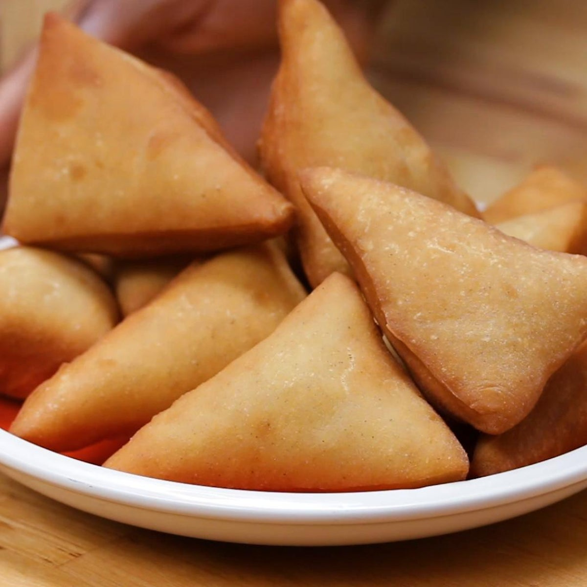

Mandazi

Mandazi are lightly sweet pieces of fried dough, similar to doughnuts but less sugary and without any glaze. They are one of the most popular breakfast and snack foods in Tanzania, sold from street stalls and small cafés in the early morning and often made fresh at home. The dough is flavoured with cardamom and coconut milk, which give mandazi their distinctive fragrant taste. They are usually cut into triangles or squares before frying, puffing up into golden, pillowy pieces that are crisp on the outside and soft inside. Mandazi are best enjoyed warm with a cup of chai, and many people also pack them as an easy snack for school or work.
Ingridients
- 3 cups all-purpose flour
- 1/2 cup sugar
- 2 teaspoons instant yeast
- 1 teaspoon ground cardamom
- 1 cup warm coconut milk
- 2 tablespoons melted butter
- Oil for deep frying
Steps
- Mix the flour, sugar, yeast, and cardamom in a bowl.
- Add the coconut milk and butter and knead into a smooth dough.
- Cover and let it rise for one hour.
- Roll the dough out to about 1cm thick and cut it into triangles.
- Let the pieces rest for 15 minutes.
- Fry in medium-hot oil until puffed and golden on both sides.
- Drain on paper towels and serve warm.